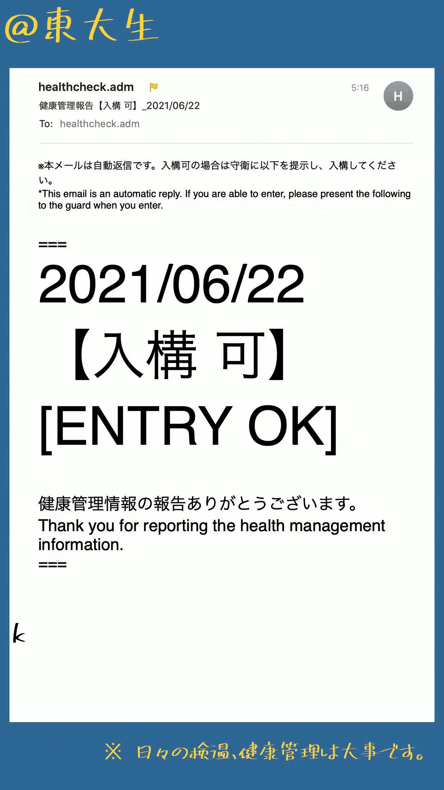

pycharmers.cli.video_of_typing module¶
-
pycharmers.cli.video_of_typing.video_of_typing(argv=['-M', 'html', '.', '_build'])[source]¶ Create a typing video. Before using this program, please do the following things
Create a typing json file easily at JS.35 タイピング風動画を楽に作成する
Add some keyword arguments for
draw_text_in_pil.
- Parameters
--typing (Tuple[str]) – Path to typing text file(s).
--typing-fontname (str) – Default Typing Font name
--size (List[int]) – Output video image size. Defaults to
[1080,1920].--bgRGB (List[int]) – The color of background image. (RGB) Defaults to
[255,255,255].--video (str) – The path to video to paste. Defaults to
None.--image (str) – The path to image to paste. Defaults to
None.--sec (float) – The length of the created video. This value is used when
--videois NOT specified. Defaults to5.--fps (float) – The fps of the created video. This value is used when
--videois NOT specified. Defaults to30.--margin (int) – The margin size for pasting video or image. Defaults to
0.--align (List[str]) – Horizontal and vertical alignment of the content (video/image).
--out (str) – The filename of created typing video. Defaults to
f"typing_video_{now_str()}.mp4".--quiet (bool) – Whether to make the output quiet.
Note
When you run from the command line, execute as follows:
$ video_of_typing --typing /path/to/typing1.json \ /path/to/typing2.json \ /path/to/typing3.json \ --video /path/to/video.mp4 \ --bgRGB "[48,105,152]" \ --align "[center,middle]" [Output Typing Video] * Frame Count : 285 * Frame Length : 4.8[s] * Size (W,H) : [1080, 1920] * Background Color (RGB) : [48, 105, 152] * Output Typing Video Path : typing_video_2021-06-24@23.34.01.mp4 [Image or Video data to paste] * Data : /path/to/video.mp4 * Size (W,H) : (1034, 1590) * Margin (top,left) : (165, 23) [TypeWriter](/path/tp/typing1.json) * ttfontname : /path/to/851MkPOP_002.ttf * fontsize : 70 * textRGB : (0, 0, 0) * Number of Typing Texts : 62 * Move to the next typing every 4.6 from the 0th to the 285th [TypeWriter](/path/tp/typing2.json) * ttfontname : /path/to/851MkPOP_002.ttf * fontsize : 100 * textRGB : (255, 212, 59) * Number of Typing Texts : 1 * Move to the next typing every 285.0 from the 0th to the 285th [TypeWriter](/path/tp/typing3.json) * ttfontname : /path/to/851MkPOP_002.ttf * fontsize : 50 * textRGB : (255, 212, 59) * Number of Typing Texts : 1 * Move to the next typing every 285.0 from the 0th to the 285th Video of Typing 285/285 [####################]100.00% - 14.107[s] Typing Video is saved at typing_video_2021-06-24@23.34.01.mp4Sample

-
class
pycharmers.cli.video_of_typing.TypeWriter(total_frame_count: int, typing_json_paths: Tuple[str] = (), verbose: bool = True)[source]¶ Bases:
object-
set_typing_data(json_path: str, total_frame_count: int, fontsize: int = 30, textRGB: Tuple[int, int, int] = 0, 0, 0) → None[source]¶ Set a drawing function.
- Parameters
json_path (str) –
Json file which contains typing data. You can easily create this file at JS.35 タイピング風動画を楽に作成する
total_frame_count (int) – Total frame count of Typing video.
fontsize (int, optional) – Default font size. You can override this value by adding to json file (at
path). Defaults to30.textRGB (Tuple[int,int,int], optional) – Default font color. You can override this value by adding to json file (at
path). Defaults to(0,0,0).
- Returns
[description]
- Return type
[type]
-
draw_typing_texts(img: PIL.Image.Image, curt_frame_count: int) → PIL.Image.Image[source]¶ Apply each drawing function in
self.drawing_functions.- Parameters
img (Image.Image) – Input image object.
curt_frame_count (int) – Current Frame Count
- Returns
Image object with typing texts.
- Return type
Image.Image
-